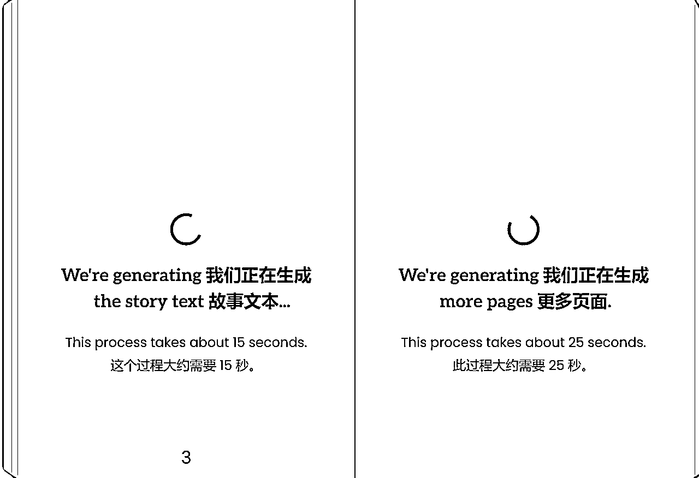
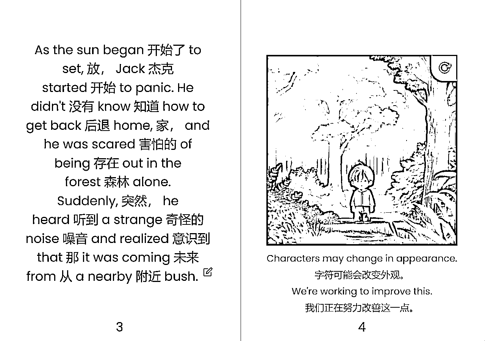
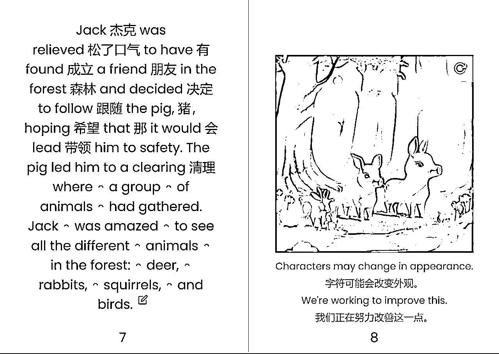
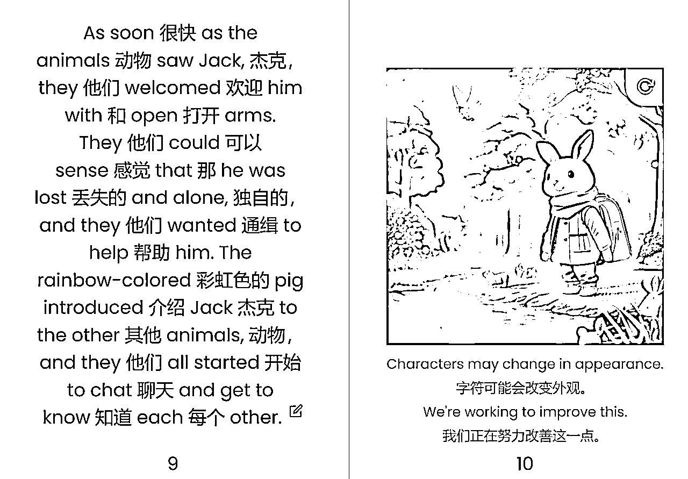
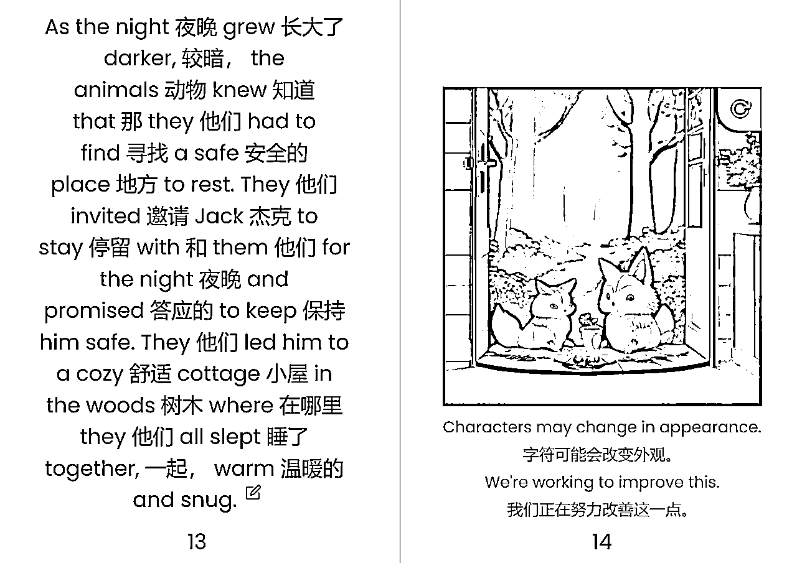
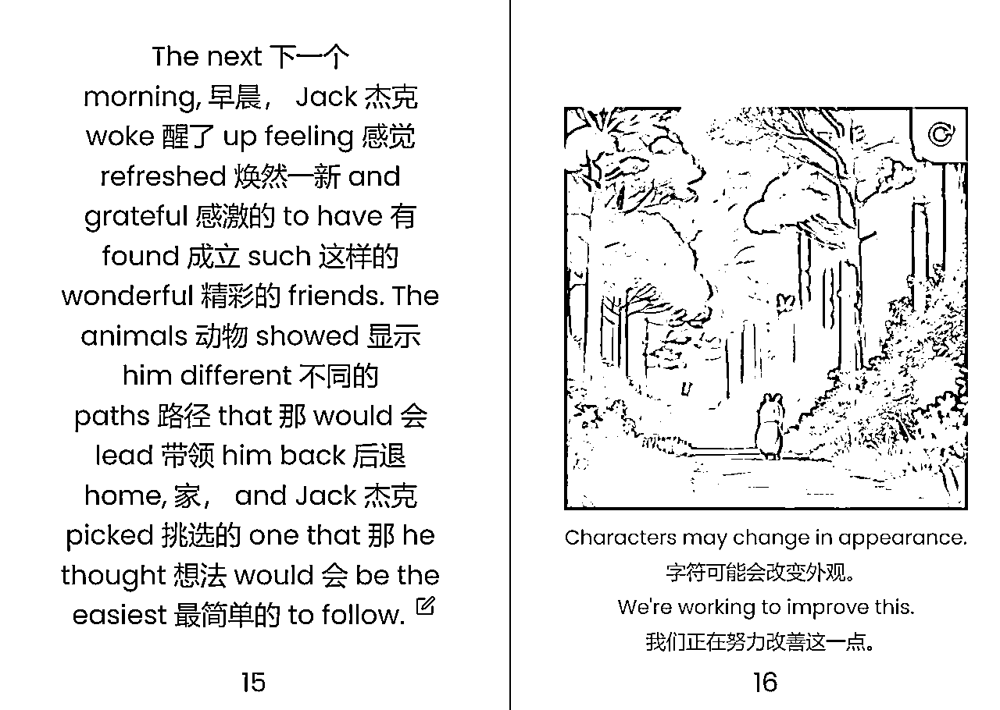
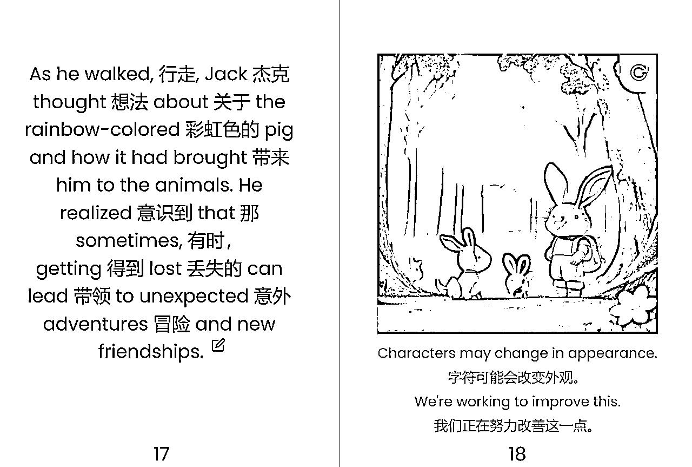
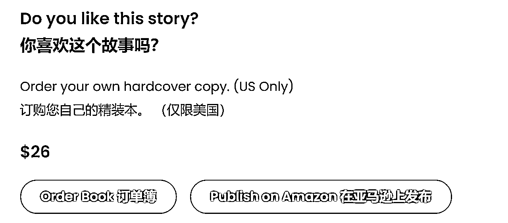

来源：https://ycgc2f717o.feishu.cn/docx/SIDRd6VqIorKSTxzMnxckTWWnyf
不需要你有绘画功底，也不需要你很会讲故事。只需要一行prompt就可以生成一个儿童绘画故事。
想不想试试，跟我一起来
例子：The Lost Boy and the Rainbow Pig


等待一会，故事出来了








有2个注意点：
1.暂时只有英文显示，可以用翻译软件。
2.可以要求几页的绘本。

一个完整的操作就完成了，谢谢阅读😁